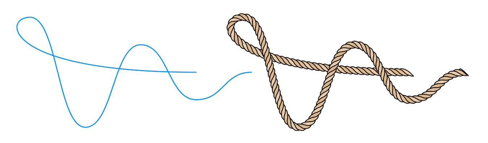
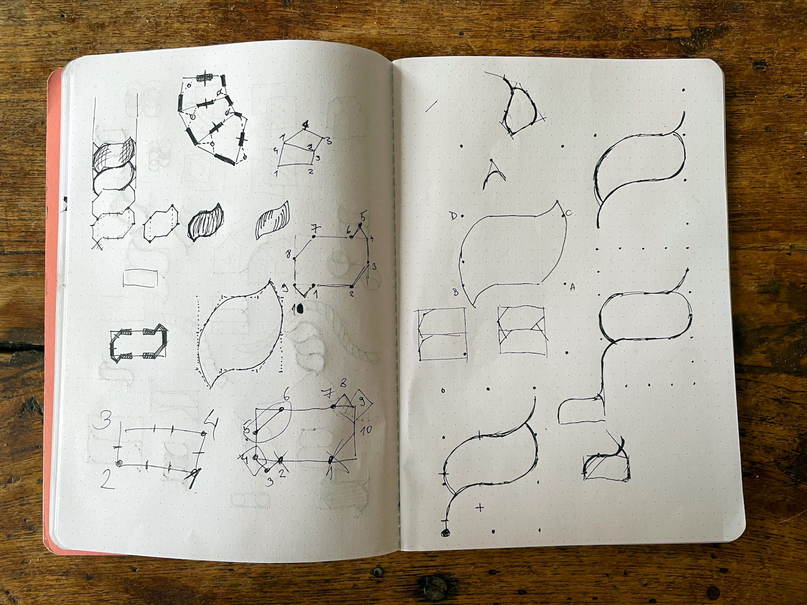
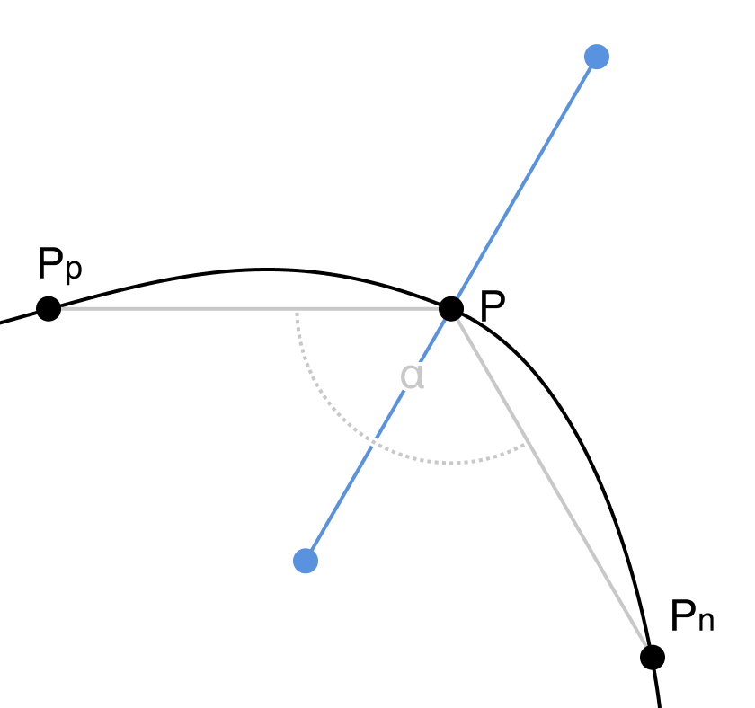
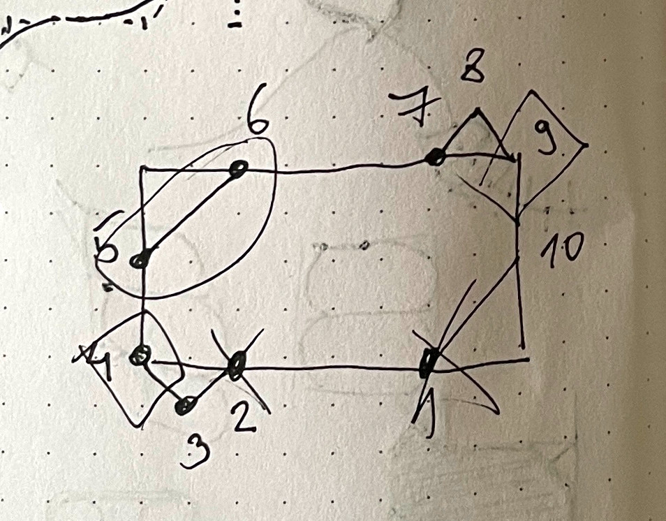
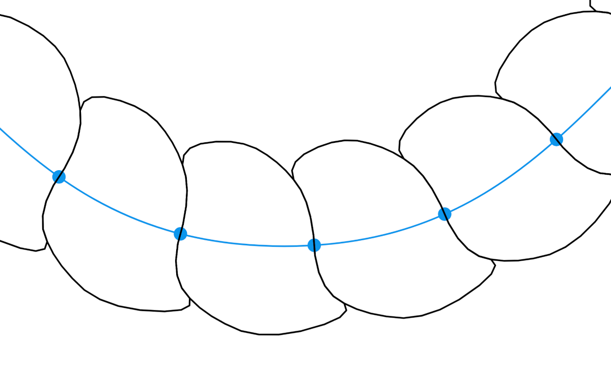
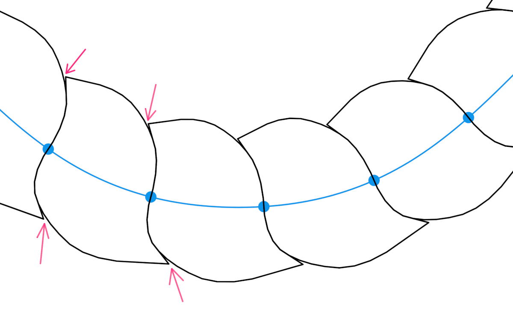

Today, I'll take you through the process I came up with in regard to transforming an SVG path into a vector rope drawing.
We'll learn how to turn the path on the left into the rope on the right:

The problem popped up on a project my colleagues were working on, and it stuck with me. I thought about it and started playing with it as soon as I got some free time. I had a lot of fun. Therefore I want to share the process with you.
Please note that this is not a coding tutorial but a detailed overview of each step. But don't worry, the code is fully available.
If you feel impatient, you can jump to the interactive demo or check the code on CodePen. But I wholeheartedly recommend you read the whole thing first.
Idea #
Looking at this close-up photo of a rope, we can see it consists of multiple strands twisted around each other. Visually, they split the rope into segments. Each segment's 2D projection resembles a curved polygon.
Our goal will be to create these polygons using JavaScript.
We'll start by generating simple rectangular polygons. Then we'll fine-tune them to make them look like actual rope segments.
How to approach problems like this #
I think this is one of the problems a child can solve and draw on paper. But at the same time, breaking it down and turning it into code is hard.
I've seen many junior developers struggle with similar problems. Usually, it starts with them diving into coding right away. Then they entangle themselves in their code and get stuck. And that is why it is so important to solve the problem first.I bore my mentees to death by repeating that programming is problem-solving, while code is just a tool to implement those solutions.
I'm a visual thinker. For me drawing things on paper makes any problem easier to solve. I would suggest you try the same. Keep a pen and paper near your computer and reach out for them before you start typing code.
After doodling ropes for a while, I was satisfied with the image you can see in the bottom right on the left page:

It is not perfect, but it is straightforward and easy to code. That's why I selected it as a starting point, and only then I started coding.
The process #
The image below will stay in the viewport and update as you scroll.Start with an SVG path #
Our goal is to make a program that turns any SVG path into a rope. The program will have to support straight line segments (polylines) and bezier curves.
Let's start with a simple curved path shown above.
<path
d="M 50 150
C 150 150, 150 50, 250 50
C 350 50, 350 150, 450 150"
/>
Split the path into equal parts #
If we split the path into parts, we can use each piece for one rope segment. To chop the path up, we'll have to track along it and calculate a point on every n pixels.
To do so, we'll need a way to get the total length of the path so we know when to stop iterating, as well as the function to get the point at the specific length.
Luckily, browsers natively provide us with the methods we need:
- getTotalLength which returns the length of the path.
- getPointAtLength which returns the point at a given distance along the path.
The nice thing is that we don't need to render the path on the page. Both methods work with the path being in memory only.
Below is the function I used to calculate these points:
function getPathPoints(d, step = 10) {
const path = document.createElementNS("http://www.w3.org/2000/svg", "path");
path.setAttribute("d", d);
const length = path.getTotalLength();
const count = length / step;
const points = [];
for (let i = 0; i < count + 1; i++) {
const n = i * step;
points.push(path.getPointAtLength(n));
}
return points;
}
You'll notice two extra points in the image above at the start and the end. Those are not included in the code snippet above. Just ignore them for now, we'll use them later.
Note on server-side rendering
These methods don't work on the server. However, I checked a few server-side languages, and almost all of them have variations of these two methods. For NodeJS you could probably use svg-path-properties library.
Add some thickness #
Now that the path is split, we need to give each segment some thickness. We'll do it by drawing a normal line through each point.
For our use case, normals don't have to be mathematically exact, approximation will do. There is an easy way to approximate a normal on a curve, and it requires three consecutive points.

In the figure above, you can see the normal drawn through the point P. It is defined by the bisector of the angle α between points Pp, P and Pn. Points Pp and Pn are helper points. We are going to use the previous and next points as helper points.
If you thought, "oh, that's why he added those extra points in the previous step", you are correct! Those are added to ensure the first and the last point also have neighbors on both sides.
Lucky me, I already had code, as I solved the same problem for my Vertigo project.
Connect normals into segments #
Not much to say about this step. We just need to connect pairs of neighboring normals, which will give us blocky segments. Let's try rounding their corners to make them more interesting.
Rounding segment corners #
To round segments, we will use Chaikin's method, which is a recursive subdivision algorithm for curve generation. The algorithm takes each line of the polygon and finds two points at a defined ratio (0.25 usually works best) on both sides. Then it replaces the original point with two newly created ones. Finally, we repeat the whole process recursively until we are satisfied with the result.
It sounds more complicated than it actually is, and I think the interactive example below will help things fall into place:
This rounding method doesn't return bezier curves but a polyline. In many cases, that is good, as geometrical operations are easier to do with polylines than with bezier curves. With enough iterations, the human eye can't tell the difference anyway.
Skew segments #
The physical rope is created by twisting multiple threads together. To mimic the twisting, we need to skew our segments. We can easily do that by rotating the bisector for a fixed angle.
Call it a day? #
If we remove helper elements and make the whole thing thinner, it resembles a rope. Depending on your needs, you could stop right here.
But if we look at the photo of a rope above, we can see that our polygons are not fully resembling it. They are almost regular, while in the photo, segments overlap and go under each other.
So let's continue and try to make our segments look more like ones in a physical rope.
Improve segments #
We need to go back to the sketch I showed you at the start. We'll un-skew segments, for now, to make things easier to see.

We need to cut off two segment corners and add two tips defined by points 3 and 8 in the sketch.
After implementing it, segments felt too blocky and mathematicalSorry, but I didn't keep the code for it, so I don't have an example to show you., but I knew I was going in the right direction. Then I started fine- tuning it by moving points around. You can see the result in the image above, and I think segments now look a lot more natural and curvy.
Before moving on, notice that the first and the last segments are slightly different as they are not sandwiched between two other segments. That's why they have different treatment in the code than all other segments.
Round segments again #
If we apply Chaikin's algorithm to new segments as a closed polyline, we will get this:

It is nice and round, but it feels weird, and takes away from the illusion of twisting. It would look better if we kept two sharp corners.
To keep the corners, we'll split the segment line into two lines and then apply the rounding algorithm on each one separately. This will give us a better illusion of threads going behind each other.
Fix gaps (optional) #
There is a minor issue that is noticeable after the rounding step. Small gaps appear because points are removed in the process.

I don't mind it, as it is only visible if the outlines are really thin. Thicker outlines will cover everything nicely.
I did fix it, but only for the challenge of it. There is a hacky technique to save a point from removing when using Chaikin's algorithm - triple that point. That way, we are creating two edges with zero width. No matter how many times we do the recursive subdivision, any ratio of zero is still zero.
However, this hack has a drawback. It will duplicate all three points in each iteration. So if you end up using this fix, you might want to clean up the duplicated points.
As I already said, I don't mind, so I disabled the fix in the following steps.
Skew segments again #
Let's skew everything again. Same as in the previous step, we'll just rotate the bisector by a fixed angle.
Add some color #
Let's remove the helper elements and add some color. I would say that now it really looks like a rope! But we are not entirely done yet.
Animate it #
We can even animate our rope. Animating it can come in handy for charts. But honestly, I just wanted to have some fun with it.
We'll keep it simple. We'll update the path in each frame, regenerate the whole rope and rerender it. To do that, we'll need an animation loop and a way to update the path. If you are unfamiliar with the animation loop, I already wrote about it here.
To move the path, I wrote a function to update the y coordinate for each point on the path:
function getStepPath() {
const y = easing(t) * 100 + 50;
const y1 = y;
const y2 = 200 - y;
return `M 50 ${y2}
C 150 ${y2}, 150 ${y1}, 250 ${y1}
C 350 ${y1}, 350 ${y2}, 450 ${y2}`;
}
t is the value that bounces between 0 and 1 over time. Then we can apply easing to the t value and calculate all of the y values.
To make our rope dance, we need to plug this logic into the animation loop.
I won't go any deeper into the implementation here. I recommend you check the code and play with it.
Call it a day! #
Finally, our rope is complete! Thank you very much for sticking with me. Grab a beverage of your choice; you earned it!
Final thoughts #
This post took way longer to write than I expected, and I hope you enjoyed it cause I did. Making interactive examples is pretty time-consuming, but it is rewarding and fun to do.
Before you go, don't forget to:
- play with the interactive demo below
- check the code on CodePen
- dig around interactive examples used on this page (the code is a little messy).